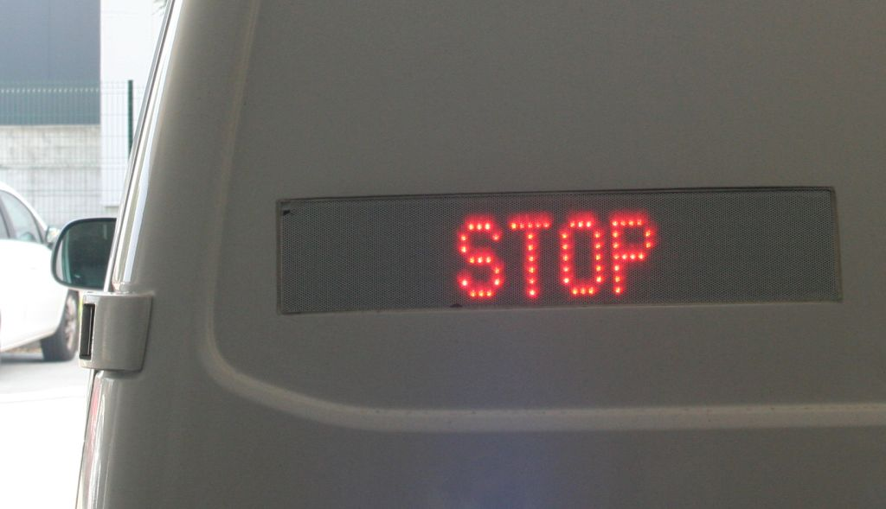

Spričo pozivov k današnjemu nedovoljenemu protestnemu shodu policisti vse pozivamo k odgovornemu ravnanju. Svetujemo vam, da se ne zbirate na javnih krajih in na nedovoljenih shodih. Policija razume in spoštuje ustavno varovano pravico do izražanja svojega mnenja. Razumeti pa je treba, da je zbiranje ljudi z veljavnim odlokom ponovno prepovedano, prav tako niso dovoljeni shodi ali podobne prireditve, gibanje ljudi pa je, razen danes, omejeno na meje regije. Udeležba na shodu ne spada med izjeme za prehajanje teh meja. Poleg tega je na javnem kraju treba obvezno uporabljati ustrezno masko. Naloga policije na neprijavljenih in tudi nedovoljenih shodih je, da skrbi za javni red. Tako bodo policisti tudi na morebitnih novih shodih opravljali naloge varovanja, preprečevali kršitve javnega reda in izvajali nadzor nad upoštevanjem sprejetih ukrepov zaradi zajezitve in obvladovanja nalezljive bolezni covid-19. Policisti bodo poteke shodov tudi ustrezno dokumentirali in snemali. Na podlagi zavarovanih videoposnetkov bodo identificirali kršitelje in jim zaradi kršitve vladnih odlokov in s tem Zakona o nalezljivih boleznih posredovali plačilne naloge. Prav tako bomo izvedli vse postopke, da se proti organizatorjem shodov ustrezno ukrepa. Zaradi varnosti udeležencem odsvetujemo, da na javne shode prihajajo z otroki, saj so dogodki in posledice nepredvidljivi. Otroci so zaradi svoje telesne in duševne razvitosti še posebej občutljivi, zato morajo biti starši še posebej premišljeni in odgovorni. Policisti poudarjamo, da ne posegamo v pravice posameznikov do zbiranja in svobode izražanja, vendar pa je treba razumeti, da so odrejeni ukrepi izjemnega pomena za zdravje vseh nas in jih je treba upoštevati. Zato vse pozivamo, naj ravnajo odgovorno in spoštujejo ukrepe za zajezitev epidemije, tako zaradi sebe kot tudi zaradi drugih.
